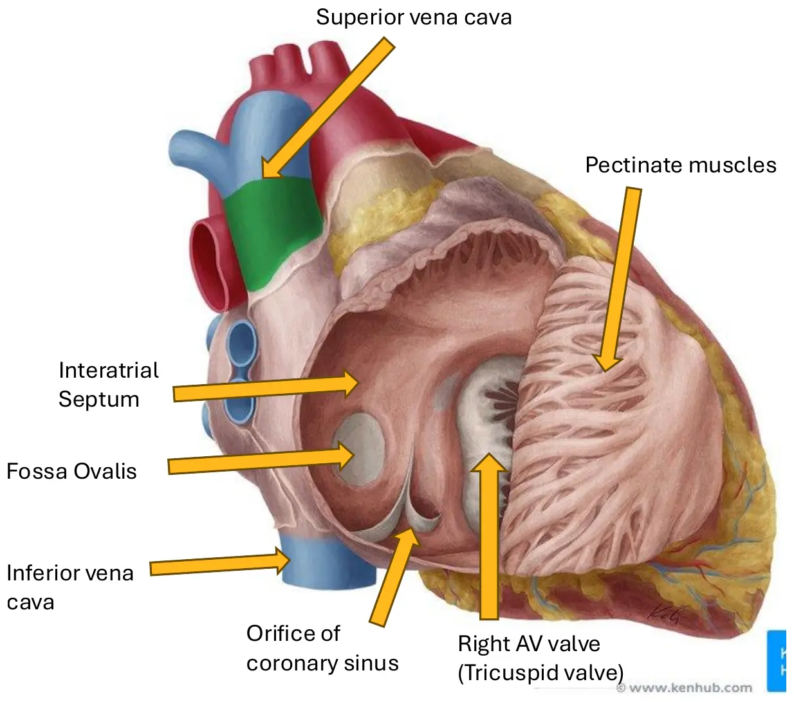
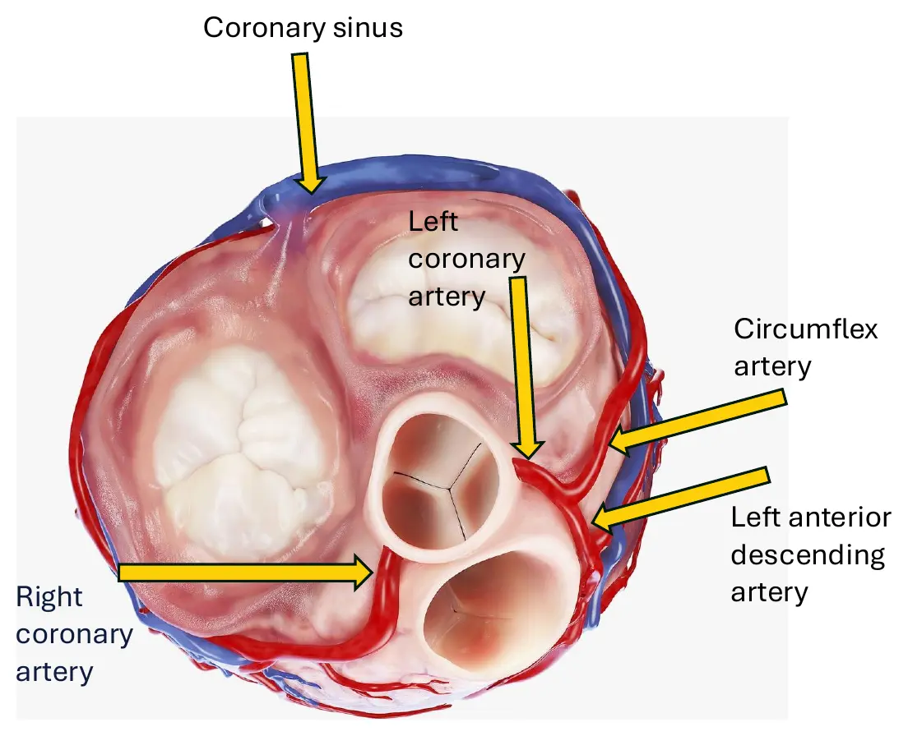

Courses › Human Anatomy › Module 9
Human Anatomy · 6111
Module 9 — Cardiopulmonary System
Topics: 9.1 Heart (exterior · right side · left side · coronaries) • 9.2 Respiratory (lungs · bronchial tree · respiration muscles) • 9.3 Blood Flow to the UE and LE
📖 How to Use These Notes
- Best used with the lecture playing — keep these open, follow along, and add your own notes as you watch
- Lecture banners mark the start of each topic and run in the same order as the videos
- 🎙 Callouts = direct insights from the instructor's transcript
- ★ Tips = exam-relevant content or things the instructor told you to prepare
- Figures are taken directly from the module's slide decks
- Each topic ends with its own Quick-Reference Glossary
- Written from last year's recordings — if a lecture has been re-recorded or resequenced, Canvas wins
- Dr. Rocky Barrett, board-certified cardiopulmonary PT, records the whole module — this is his home turf
- Quiz #3: 5 questions from M7–M8 + 10 questions from M9
- The flow sequences are the module: aorta → digits, heart → alveoli → heart. Learn them as chains, not slides
- The thoracic cage muscles from Module 7 return here with their breathing function attached, exactly as promised
TOPIC 9.1
The Heart
1. Orientation and Location
- Middle mediastinum, posterior to the sternum, anterior to the esophagus. Positioned centre-to-left between the lungs — forming the cardiac notch of the left lung. The apex points inferolaterally (the apex beat is palpable where it taps the chest wall); the base is the great-vessel end. Wrapped in the pericardium.
Clinical spotlight — pericarditis
- Inflammation of the pericardial sac
- Infectious: viral · bacterial · fungal
- Non-infectious: autoimmune disease (lupus, RA) · post-MI · post-surgery or trauma · cancer/radiation · kidney failure
2. The Four Chambers
| Chamber | Position | Job |
|---|---|---|
| Right atrium | Upper right; anterior to the left atrium; part of the base | Venous return collector — SVC, IVC, coronary sinus → tricuspid valve |
| Right ventricle | Lower right; most of the anterior surface | Fills in diastole; pumps to the pulmonary artery via the pulmonary valve in systole |
| Left atrium | Upper left; forms the posterior aspect | Receives oxygenated blood via four pulmonary veins → mitral valve |
| Left ventricle | Forms the apex; left and posterior to the RV | Pumps to the systemic circulation — hence the thickest myocardium of any chamber |
- Anterior surface landmarks: right auricle · coronary sulcus · right ventricle · left auricle · anterior interventricular sulcus · left ventricle · apex.
3. Inside the Right Heart
| Structure | What it is |
|---|---|
| Pectinate muscles | Ridged atrial wall muscle |
| Fossa ovalis | Remnant of the fetal foramen ovale in the interatrial septum |
| Coronary sinus orifice | Where the heart's own venous blood returns |
| Tricuspid (right AV) valve | Atrium → ventricle gate |
| Chordae tendineae + papillary muscles | Tendon cords anchored by wall muscle — prevent valve regurgitation |
| Trabeculae carneae | Ridged ventricular wall — stops walls sticking, baffles flow to reduce workload |
| Pulmonary valve | Prevents backflow from the pulmonary artery |

| ATRIAL SEPTAL DEFECT (ASD) | VENTRICULAR SEPTAL DEFECT (VSD) |
|---|---|
| A hole in the interatrial septum — often at the fossa ovalis (a foramen ovale that never closed) | A hole in the interventricular septum — left-to-right shunting under ventricular pressures |
4. Inside the Left Heart
- Four pulmonary veins (right and left, superior and inferior each) deliver oxygenated blood. The left auricle is the pectinate-muscled fetal remnant; the septal fossa ovalis shows from this side too. Mitral (bicuspid) valve → left ventricle, with its own chordae and papillary muscles; the interventricular septum walls it off from the right.
| Aortic valve pathology | What goes wrong |
|---|---|
| Aortic stenosis | Narrowed opening → pressure overload on the LV |
| Aortic regurgitation | Incomplete closure → backflow → volume overload |
| Valve replacement | Surgical, or TAVR — transcatheter aortic valve replacement — for severe disease |
5. Coronary Blood Flow

| Vessel | Territory |
|---|---|
| Right coronary artery (RCA) | Conal branch (conus arteriosus) · anterior ventricular branches (upper/middle RV) · right marginal (RV) · usually gives the PDA |
| Left anterior descending (LAD) | Anterior ventricular septum + most of the anterior LV. Occlusion = catastrophic — “the Widow Maker” |
| Left circumflex (LCX) | Left atrium + posterior/lateral LV; left marginal branch to the lateral LV |
| Posterior descending artery (PDA) | From the RCA: posterior septum + posterior walls of both ventricles |
| Coronary sinus | The venous collector emptying into the right atrium |
Myocardial infarction by artery — the deck's own table
- LAD: 40–60% of MIs
- LCX: 15–30%
- RCA: 10–25%
- The sync session's breakout drill: name the myocardial territory lost for an infarct at the LAD, RCA, PDA, and circumflex — straight from the table above
TOPIC 9.2
Respiratory System
1. Lungs and Airways
| RIGHT LUNG | LEFT LUNG |
|---|---|
| 3 lobes — superior, middle, inferior | 2 lobes — superior, inferior; 1 oblique fissure |
| 2 fissures — horizontal + oblique | Cardiac notch accommodates the heart; the lingula is the middle-lobe analogue |
| Tract | Structures |
|---|---|
| Upper | Nasal cavity (warms, humidifies, filters; ciliated) · oral cavity (backup airway) · pharynx — naso-, oro-, hypopharynx (shared food/air path) |
| Lower | Larynx (voice box; guards the trachea) · trachea (ciliated, held open by cartilage rings) · bronchi → bronchioles → alveoli (gas exchange) |
| Conducting airway | Cartilage story |
|---|---|
| Trachea | C-shaped hyaline rings, open posteriorly, closed by the trachealis muscle |
| Carina | The bifurcation ridge — T4–T5, at the sternal angle |
| Primary (main) bronchus | Irregular plates replace the rings. Extrapulmonary until the hilum |
| Lobar (secondary) | Plates; now intrapulmonary — one per lobe |
| Segmental (tertiary) → subsegmental | Progressively smaller cartilage islands |
| Bronchiole | No cartilage at all — the smallest conducting airway |
2. Alveoli and Pulmonary Blood Flow
- Alveoli: balloon air sacs at the ends of the tree — the site of O₂/CO₂ exchange. Surfactant keeps them from collapsing.
- The loop: heart → pulmonary trunk → pulmonary arteries → arterioles → alveolar capillaries (gas exchange) → venules → four pulmonary veins → left atrium. The pulmonary artery is the body's one artery carrying deoxygenated blood, the pulmonary veins its oxygenated veins.
| CLINICAL — POSTURAL DRAINAGE | CLINICAL — COPD |
|---|---|
| Positioning the patient so gravity drains secretions from specific bronchopulmonary segments — the reason segment anatomy is PT knowledge, not trivia | Chronic obstructive pulmonary disease — airway obstruction and alveolar destruction; the cardiopulmonary course's core diagnosis |
3. Muscles of Respiration
| Muscle | O / I / N | Role |
|---|---|---|
| Diaphragm | Sternal (xiphoid) + costal (cartilages/ribs 7–12) + lumbar (L1–L3) parts → central tendon · phrenic nerves C3–C5 | THE primary muscle of inspiration |
| External intercostals | Inferior rib border → superior border below · intercostal nn. | Elevate ribs in (forced) inspiration |
| Internal intercostals | Costal groove → rib below · intercostal nn. | Depress ribs in forced expiration |
| Rectus abdominis | Pubis → xiphoid + cartilages 5–7 · T7–T12 | Forced expiration (plus trunk flexion) |
| Accessory muscles | How they help |
|---|---|
| Scalenes (ant/mid/post) | Elevate ribs 1–2 |
| Sternocleidomastoid | Elevates sternum and clavicle |
| Upper trapezius | Elevates the scapula — indirect expansion |
| Pec major / pec minor / serratus anterior / latissimus dorsi | Closed-chain breathing helpers: with the arms fixed, they reverse origin and insertion to lift and expand the ribcage — pec minor on ribs 3–5, the lat especially with elevated fixed UEs |
The diaphragm's three openings
- Aortic hiatus: aorta, azygos vein, thoracic duct (Module 8's lymphatic trunk!)
- Esophageal hiatus: esophagus + vagus nerve
- Caval foramen: inferior vena cava
Clinical spotlight — diaphragmatic paralysis
- C3, 4, 5 keeps the diaphragm alive — phrenic damage from trauma, surgery, disease, infection, tumours, or cord lesions at those levels
- Partial damage → paresis; complete → paralysis
- ALS ends in diaphragmatic failure — respiratory failure is the terminal event
- Diabetic neuropathy of the phrenic nerve is a less common cause the lecturer still sees in practice
TOPIC 9.3
Blood Flow to the Extremities
1. Upper Extremity — Arterial Chain
- The right and left start differently: right side — aortic arch → brachiocephalic trunk → subclavian; left side — subclavian directly off the arch. From there both run the same chain:
- Subclavian → axillary → brachial → radial + ulnar → palmar arches → digitals. The radial artery favours the deep palmar arch, the ulnar the superficial arch — a built-in anastomosis for the hand.
- Venous return: palmar arches → radial/ulnar veins → brachial → axillary → subclavian → brachiocephalic → SVC → right atrium, with the cephalic (lateral) and basilic (medial) superficial veins feeding in.
2. Lower Extremity — Arterial Chain
- Thoracic aorta → abdominal aorta → common iliac → external iliac → femoral → (adductor hiatus) → popliteal → anterior + posterior tibial → foot.
| Segment | Detail |
|---|---|
| Internal iliac | The pelvis's supply — anterior trunk (obturator, middle rectal, vesicals, uterine, inferior gluteal, internal pudendal) + posterior trunk (iliolumbar, lateral sacral, superior gluteal) |
| Femoral triangle | Borders: inguinal ligament (superior) · adductor longus (medial) · sartorius (lateral) — the femoral pulse lives here |
| Deep femoral artery | Medial + lateral circumflex femorals and perforators — supplies thigh extensors, flexors, adductors, medial skin, proximal femur |
| Adductor hiatus | The gap in adductor magnus where femoral becomes popliteal — the name change you already met in Anatomy M5 |
| Foot | Dorsal: dorsalis pedis → arcuate → dorsal metatarsals (+ tarsal branches) · Plantar: medial + lateral plantar arteries → plantar arch → plantar metatarsals |
3. Lower Extremity — Venous Return
| DEEP DRAINAGE | SUPERFICIAL DRAINAGE |
|---|---|
| Anterior/posterior tibial → popliteal → femoral → external iliac → common iliac → IVC → right atrium | Great saphenous (medial, longest vein in the body) and small saphenous (→ popliteal), from the dorsal venous arch |
| Collects from muscle and bone | Collects from skin and subcutaneous tissue — then drains into the deep system |
Module 9 — Quick-Reference Glossary
| Term | Definition |
|---|---|
| Middle mediastinum | The heart's address, behind the sternum, in front of the esophagus |
| Pericarditis | Pericardial inflammation — viral to post-MI |
| Fossa ovalis | Fetal foramen ovale remnant; unclosed = ASD |
| Chordae tendineae + papillary muscles | The anti-regurgitation rigging of both AV valves |
| Trabeculae carneae | Ventricular ridging that baffles flow |
| Widow Maker | The LAD — 40–60% of MIs |
| PDA | Posterior descending artery, usually off the RCA |
| Coronary sinus | Venous return of the heart itself, into the right atrium |
| Stenosis vs regurgitation | Pressure overload vs volume overload |
| TAVR | Transcatheter aortic valve replacement |
| Carina | Tracheal bifurcation at T4–T5 / sternal angle |
| Lingula | The left lung's middle-lobe analogue |
| Cartilage gradient | Rings → plates → islands → none (bronchiole) |
| Surfactant | Anti-collapse coating of the alveoli |
| Phrenic nerve | C3–C5 — the diaphragm's lifeline |
| Diaphragm openings | Aortic hiatus · esophageal hiatus · caval foramen |
| Closed-chain accessory breathing | Arms fixed → pecs, serratus, lat expand the cage |
| Brachiocephalic trunk | Right side only — the arch's first branch |
| Palmar arches | Deep (radial-dominant) + superficial (ulnar-dominant) |
| Femoral triangle | Inguinal ligament · adductor longus · sartorius |
| Adductor hiatus | Femoral → popliteal name change |
| Great saphenous vein | Longest vein in the body; superficial medial leg |